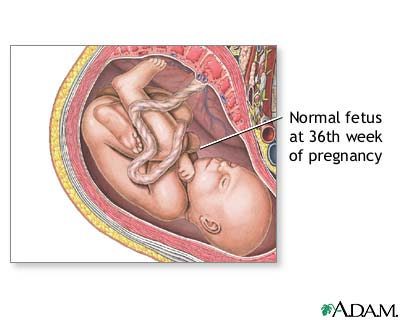

Minggu ke-34 :
bayi berada di pintu rahim. Bayi sudah dapat membuka dan
menutup mata apabila mengantuk dan tidur, bayi juga sudah mulai
mengedipkan matanya. Tubuh bunda sedang mengirimkan antibodi melalui
darah bunda ke dalam darah bayi yang berfungsi sebagai sistem
kekebalan tubuhnya dan proses ini akan tetap terus berlangsung bahkan
lebih rinci pada saat bunda mulai menyusui. Berat Badan bayi
2000-2010 gram, dengan tinggi badan sekitar 45-46 cm.

Minggu ke-35 :
Pendengaran bayi sudah berfungsi secara sempurna. Lemak
dari tubuh bayi sudah mulai memadat pada bagian kaki dan tangannya,
lapisan lemak ini berfungsi untuk memberikan kehangatan pada
tubuhnya. Bayi sudah semakin membesar dan sudah mulai memenuhi rahim
bunda. Apabila bayi bunda laki-laki maka di bulan ini testisnya telah
sempurna. Berat badan bayi 2300-2350 gram, dengan tinggi badan
sekitar 45-47 cm.
Minggu ke-36 :
Kulit bayi sudah semakin halus dan sudah menjadi kulit bayi. Lapisan
lemak sudah mulai mengisi bagian lengan dan betis dari bayi. Ginjal
dari bayi sudah bekerja dengan baik dan livernya pun telah
memproduksi kotoran. Saat ini paru-paru bayi sudah bekerja baik
bahkan sudah siap bertemu dengan mama dan papa. Berat badan bayi
2400-2450 gram, dengan tinggi badan 47-48 cm
Minggu ke-37 :
Kepala bayi turun ke ruang pelvik. Bentuk bayi semakin
membulat dan kulitnya menjadi merah jambu. Rambutnya tumbuh dengan
lebat dan bertambah 5cm. Kuku terbentuk dengan sempurna. Bayi sudah
bisa melihat adanya cahaya diluar rahim. Bayi pada saat ini sedang
belajar untuk mengenal aktifitas harian, selain itu bayi juga sedang
belajar untuk melakukan pernafasan walaupun pernafasannya masih
dilakukan di dalam air. Berat badan bayi di minggu ini 2700-2800
gram, dengan tinggi 48-49 cm
Minggu ke-38 hingga minggu ke-40 : Proses pembentukan telah berakhir
dan bayi siap dilahirkan.